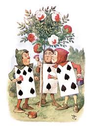

My Notes for Intro to Programming
HTML
HTML is an acronym for HyperText Markup Language. The Web is full of pages generated by using it. It allows you to add text content, references like embedded videos, and links to other pages. All the information on the page and its formatting is included in the markup document. (Styling may appear in a referenced CSS document.)
The Markup document consists of elements. These elements consist of one or more tags. Tags can nest, otherwise I would not be able to BOLD a word within a paragraph like I've done here. Tags also come in varieties. The tag I used to bold this word is an example of an inline tag which does not change the shape or positioning of the text. The paragraph tag is an example of a block tag. I did not have to specify a blank line between paragraphs because the positioning of the text was accomplished through the paragraph tag.
While most tags have both an opening and closing sequence which defines the element, there are some tags that do not need a closing tag. These are called VOID tags and an example is the line break...
which I just used.
Attributes are properties of an element. For example, the anchor tag is used for adding links. It must include the address which it links to.
Here is a link to a list of tags, which might prove useful in the future.
Remember
1. A web page is a text document written in HTML. Browsers read, interpret and display the information.
2. You write in HTML so the computer can understand and follow the directions; this is coding.
3. Computers do what they are told.
4. You can look up what you don't remember.
5. There is some jargon you do need to remember: Tag, Element, Attribute
About Learning
Learning is a journey from Ignorance to Awareness to Ability to Fluency. This course strives to take the student to Awareness in three categories: SQL Databases, Get vs Post Requests, and Webpage Structure. Additionally, it aims to take the student to Ability in the categories of Functions and Abstract Thinking. Three suggestions to the student which may be helpful are:
Ask for Help
Take a Break
Keep Going This last one means accept that you don’t know right now, but that it will come in time.
Here is a link which may prove useful. It's Andy Brown's Intro to Programming page.
As we learn, we are going to build a webpage. This is front-end web development, which is very visual and gives feedback quite quickly. The graphic design which goes into a website is written in HTML (the floorplan), CSS (style & attractiveness) and Javascript
(enabling interactivity). We started by examining an existing website.
Observing the HTML associated with the website revealed a tree-like structure to the coding. This is referred to as DOM (Document Object Model), which allows us to represent and interact with objects in HTML (elements in the tree). We also observed the
abilities of CSS, for example, the CSS coding in this document allowed me to make all h1 elements centered with an indigo color.
CSS: Cascading Style Sheets
The purpose of CSS to is control style. The commands are targeted at either tags or classes. One may wish to apply the style to ALL the tags, or only to certain tags, which would be labelled with a class selector. Once one has selected the target of the style, the rule will be written inside the set signs (curly brackets). Declaration of the rule appears as the name of the attribute and then its value. For example, p{color: red;} would instruct the computer to turn the lettering inside all paragraphs a red color.
What about the word 'cascading' in the term? Water flows downhill and so do the rules. The most specific rule will be the one applied. Inside our 'maroon' paragraph, we could put a black word, but more frequently a descendant element inherits the properties of the parent element. This is a direct consequence of the tree-like structure mentioned previously. Much like the photo of the tree of 40 fruits, you do not expect the apricots to be scattered throughout the entire tree, but rather to be located on a particular branch.
There is a LOT of information about various tags so it is prudent to have a good source of information on the possibilities. Here is a link with lots of documentation.
There are THREE methods one can use to add CSS. In the first, CSS commands are written in a separate file which is referenced in the html file. Within the head tag, a link tag is included with attributes including the name of the linked CSS file. A big project will benefit the most from this approach. The second method is to write the CSS inside the head element of the HTML. This is suitable for small projects. The third and last method is to embed the styling in the html. The inclusion of this method is largely historical, referring to the beginnings of webpage design. It leads us to the topic of repetition...
Repetition
The generation of this document highlights the beauty of using an external CSS file. While it was tempting to simply modify the previous set of notes which were done in the antiquated method of in-line style, it quickly became obvious that doing so resulted in a LOT of extra work. This work was very repetitive as each tag required handling. Compare this to the handful of commands in the CSS file which is attached! So if you don't want to feel like the lower arcana cards in the Red Queen's garden in Alice in Wonderland, use the separate CSS file convention.

Project Aids
Much like the back of the shampoo bottle advising Lather-Rinse-Repeat, you will spend a lot of time in the Code-Test-Refine mode as you develop a project. There are ways to make this go more quickly. First, one should do a little thinking about the page. Consider what the natural boxes are, and where styles and elements will be repeated. Only when you feel you have the overall layout well thought-out should you start writing the HTML, applying the styles, and then fixing the small inevitable errors.
Using the developer tools locally within a browser before making real changes in the HTML or CSS files will often save a person from serious errors. If the local coding does evil things, one can simply refresh to restore the previous condition.
Running a code validator will allow you to write code that is compatible across browsers. Here is one for HTML and here is one for CSS.
On a final note, the odd placement of brackets in CSS is actually quite useful, as it allows ease of commenting out rules as well as allowing for multiple attributes to be correlated with the appropriate tag or class selector for readability.